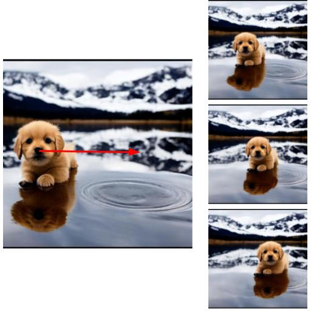
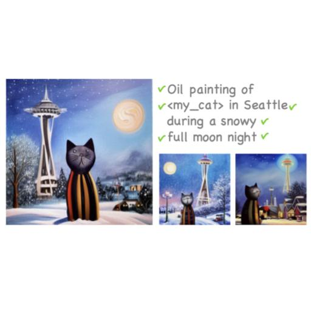
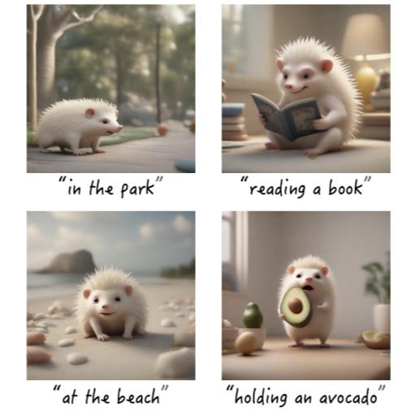
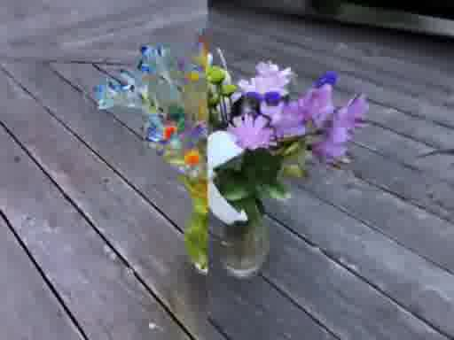
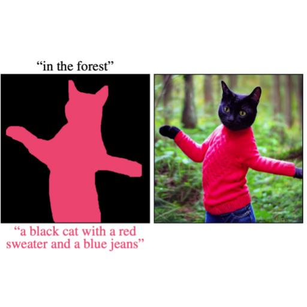
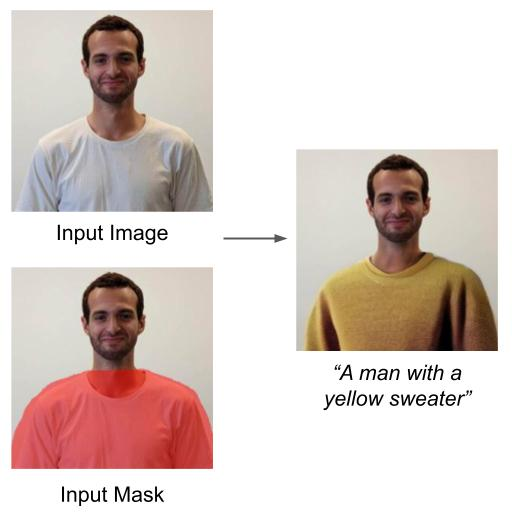
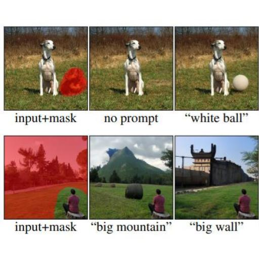

DiffUHaul: A Training-Free Method for Object Dragging in Images
SIGGRAPH Asia, 2024
Given an image with an object, our method can seamlessly relocate it within the scene.

I am a Computer Science Ph.D. student at the School of Computer Science and Engineering at the Hebrew University of Jerusalem, under the joint supervision of Prof. Dani Lischinski and Dr. Ohad Fried.
I am currently a Research Intern at Snap Research. Previously, I had the privilege of working as a Research Intern at NVIDIA Research during the winter of 2024, at Google AI (Google Research) in 2023, and at Meta AI Research (FAIR) in the winter of 2022.
My research interests include machine learning, computer vision, and generative models. More specifically, I am interested in developing new tools for content synthesis and editing --- known popularly as Generative AI.

Given an image with an object, our method can seamlessly relocate it within the scene.

Prompt aligned personalization allow rich and complex scene generation, including all elements of a condition prompt.

Given a text prompt describing a character, our method distills a representation that enables consistent depiction of the same character in novel contexts.
Given a single image with multiple concepts, annotated by loose segmentation masks, our method can learn a distinct token for each concept, and use natural language guidance to re-synthesize the individual concepts or combinations of them in various contexts.

Given a NeRF scene, our pipeline trains a NeRF generator model guided by a similarity loss defined by a language-image model such as CLIP, to synthesize a new object inside a user-specified ROI.

We suggest a new method for text-to-image generation using open-vocabulary scene control.

We present an accelerated solution to the task of local text-driven editing of generic images, where the desired edits are confined to a user-provided mask.

We introduce a solution for performing local (region-based) edits in generic natural images, based on a natural language description along with an ROI mask.
We tackle the problem of model merging, given two constraints that often come up in the real world: (1) no access to the original training data, and (2) without increasing the size of the neural network.